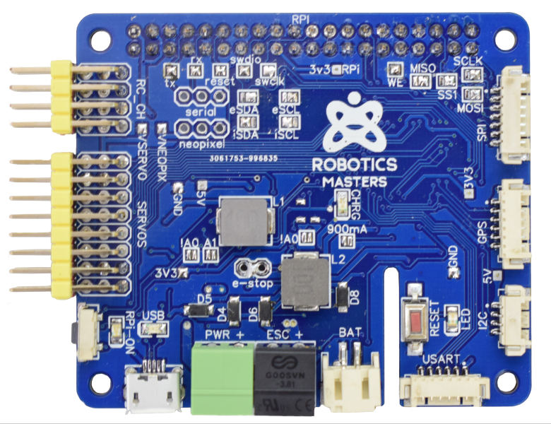

What Is The Robot HAT MM1?

The Robo HAT MM1 is an open-source robotics controller board designed for Single Board
Computers with standard 40pin GPIO(e.g., Raspberry Pi, Jetson Nano, etc.). It is best to allow Robotics Masters to tell
the Robot HAT MM1 story.
What is pymata-rh?
Pymata_rh is a Python 3 (Version 3.7 or above) Application Programming Interface (API) for programming the Robo HAT MM1. It is Windows, macOS, and Linux compatible.
Robot HAT MM1 Pin Names To Pin Number Map And Supported Pin Modes
| MM1 Pin Name | Digital / Analog Pin # | Digital Input | Digital Output | PWM | Analog Input |
|---|---|---|---|---|---|
| Servo1 | 2 | Yes | Yes | Yes | No |
| Servo2 | 3 | Yes | Yes | Yes | No |
| Servo3 | 4 | Yes | Yes | No | No |
| Servo4 | 5 | Yes | Yes | No | No |
| Servo5 | 6 | Yes | Yes | Yes | No |
| Servo6 | 7 | Yes | Yes | Yes | No |
| Servo7 | 8 | Yes | Yes | Yes | No |
| Servo8 | 9 | Yes | Yes | Yes | No |
| NeoPixel | 11 | Yes | Yes | Yes | No |
| LED | 13 | No | Yes | No | No |
| RCC1 | 14 / A0 | Yes | Yes | No | Yes |
| RCC2 | 15 / A1 | Yes | Yes | No | Yes |
| RCC3 | 16 / A2 | Yes | Yes | No | Yes |
| RCC4 | 17 / A3 | Yes | Yes | No | Yes |
NOTES:
- All digital pins support digital input pull-up mode.
- All analog input pins may be configured as digital inputs or outputs as well.
- Currently, there is no library support provided within pymata_rh to control NeoPixels. However, the pin may be used as a digital pin.
API Support
The API not only supports the pins and modes listed above, but the pymata_rh API also provides support for:
- Servo motors.
- The onboard INA219 current, shunt, and power monitor.
- The onboard MPU9250 nine-axis motion tracking device.
- External i2c devices.
- DHT 11 and 22 temperature sensors.
- HC-SR04 sonar distance sensors.
NOTE: You may need to connect a power supply that provides adequate current capacity for your application.
Implemented Using The Firmata Protocol
The API is implemented using the Firmata protocol in conjunction with FirmataExpress, custom firmware you install on the Robo HAT MM1. Communication between the Python script and the Robo HAT MM1 is accomplished over a serial link at 115200 baud.
Both Callbacks And Polling Are Supported To Retrieve Input Data
To receive an automatic and immediate notification of input data changes, you may specify a callback method to receive updates. This is the preferred method of receiving update notifications. You may also poll for the latest reported data changes if that better meets your application's needs.
Here is an example that demonstrates receiving asynchronous digital pin state data change notifications for pin 2 using callback notifications.
The API is quite simple to use. Here are the steps involved in creating a simple application.
- Set a pin mode for the pin and register a callback function.
- Have your application sit in a loop waiting for notifications.
When pymata_rh executes the callback method you specified, the data parameter is populated with a list of items that describe the change event, including a time-stamp.
from pymata_rh import pymata_rh
import time
class DigitalInput:
"""
Set a pin for digital input and received all data changes
in the callback method
"""
def __init__(self, pin):
"""
Set a pin as a digital input
:param pin: digital pin number
"""
# Indices into the callback report data
self.CB_PIN_MODE = 0
self.CB_PIN = 1
self.CB_VALUE = 2
self.CB_TIME = 3
# Instantiate this class with the pymata_rh API
self.device = pymata_rh.PymataRh()
# Set the pin mode and specify the callback method.
self.device.set_pin_mode_digital_input(pin, callback=self.the_callback)
# Keep the program running and wait for callback events.
while True:
try:
time.sleep(1)
# If user hits Control-C, exit cleanly.
except KeyboardInterrupt:
self.device.shutdown()
def the_callback(self, data):
"""
A callback function to report data changes.
This will print the pin number, its reported value
the pin type (digital, analog, etc.) and
the date and time when the change occurred
:param data: [pin, current reported value, pin_mode, timestamp]
"""
# Convert the date stamp to readable format
date = time.strftime('%Y-%m-%d %H:%M:%S', time.localtime(data[self.CB_TIME]))
# Print the pin, current value and time and date of the pin change event.
print(f'Pin: {data[self.CB_PIN]} Value: {data[self.CB_VALUE]} Time Stamp: {date}')
if __name__ == '__main__':
# Monitor Pin 2 For Digital Input changes
DigitalInput(2)
Sample console output as input change events occur:
Pin: 2 Value: 0 Time Stamp: 2020-03-10 13:26:22
Pin: 2 Value: 1 Time Stamp: 2020-03-10 13:26:27
What You Will Find In This Document
- A discussion of the API methods, including links to working examples.
- Installation and system requirements:
Copyright (C) 2020 Alan Yorinks. All Rights Reserved.
Last updated 03 September 2020 For Release v1.2